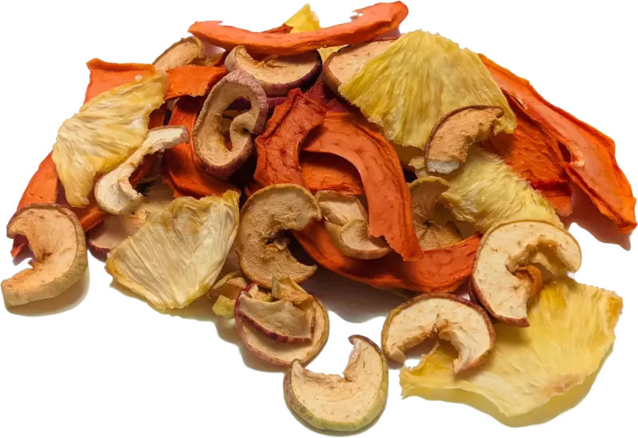

Industrias Alimentarias
Alimentos deshidratados
Alimentos peruanos a los que se les ha sido extraído toda el agua –o gran parte de ella– para alargar su vida útil. Se elimina su humedad y así se evita que proliferen microorganismos que podrían malograr el producto. Algunos de estos son los frutos secos (pasas, mango deshidratado, etc.), la papa deshidratada, entre otros productos sometidos al proceso de deshidratado.
NUESTRA GAMA DE PRODUCTOS

CONTACTANOS
Deshidratados
Los productos deshidratados nos permiten consumir frutas y verduras fuera de temporada, conservando su sabor y sus nutrientes. Tenemos la suerte de contar con elaboradores cercanos que nos ofrecen un amplio surtido.